探访雷神山医院：严防交叉感染，收治首批转运患者
原文链接 备份链接 *************▲*************2月8日晚，武汉雷神山医院收治第一批转运来的新冠肺炎患者。（新华社/图 ） 全文共*2708*字，阅读大约需要7分钟。 所有设备调试完毕后，雷神山医院感染一科十 …

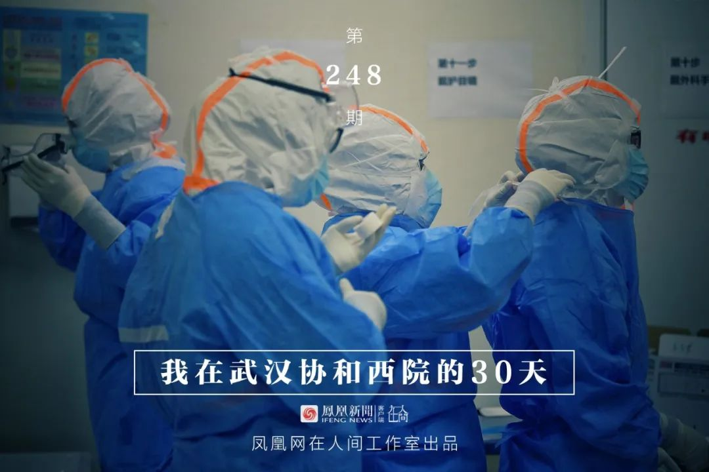
凤凰新闻客户端 凤凰网在人间工作室出品
我是北京日报摄影记者和冠欣，1月27日，我跟随援鄂北京医疗队来到了武汉，走上了抗击新冠肺炎的战场。昨天，2月25日，是我到武汉的第30天。
援鄂北京医疗队来到武汉后，在武汉协和医院西院开展救治工作。这家医院是武汉市第三批收治发热病人的定点医院，但医院原本没有适合治疗这种强传染性疾病的专业病房。1月底2月初，医院先后迎来了北京、黑龙江、广东等15支省市驰援医疗队的进驻，共开辟了15个普通病区，1个孕产妇病区和1个ICU重症病区，共810个床位。

■ 1月28日，武汉协和医院西院正门。
武汉协和医院西院距离新冠肺炎的风暴眼——汉口“华南海鲜市场”大约20公里，距离位于蔡甸区的火神山医院大约15公里。
开辟新冠肺炎病区之后，这里逐渐聚集了各省市的精英医疗队伍，成为专门接收重症危重症患者的医院。

■ 2月18日，救护车驶向火神山医院。
1月28日，到武汉的第二天，我便和北京医疗队的队员们到武汉协和医院西院对接工作。经过医院的发热门诊时，我特意观察了一下，并没有网络上的那种排很长队看不上病，也没办法住院的情况。门诊门口很安静，三三两两的市民进进出出，或在草地上坐着等待，或在门口站立徘徊。

■ 1月28日，武汉协和西院发热门诊门口人并不多。

■ 1月28日，武汉协和西院发热门诊外戴口罩的工作人员和市民。
后来我询问了医院的医护人员，得知武汉协和医院西院原本也没有可用于新冠肺炎治疗的病房，就诊患者无法住院，需要住院的患者都转向其他医院了，只有部分轻症患者每日往返做治疗。

■ 1月28日，医院门诊停车场角落的草地上，一位姑娘独自呆坐着。
随着各省市医疗队的相继入驻，武汉协和医院西院住院楼很多普通科室病房被临时改造成隔离病区。病房改造的过程十分迅速，基本是连夜改造，封闭走廊，开墙打洞做分区。
据该院负责宣传的负责人介绍，因为武汉封城，百业皆停，改造病房使用的建筑材料，甚至是托熟人从关门的建材市场仓库里辗转运出来的。
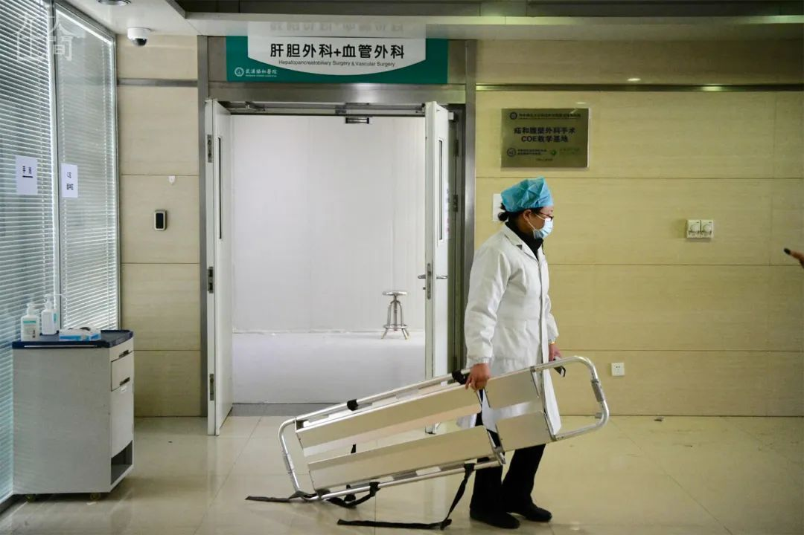
■ 1月28日，协和的医护人员正在整理肝胆、血管外科病房，将其改造成隔离新冠肺炎病房。
虽然改造后的病房仍然距离专业的感染疾病隔离病房标准差距很大，但终归是拥有了基本的收治条件。这座医院，也开始充满了生的希望。
之后一个月，我几乎每天在这座医院里，守候医护人员进出隔离病房、病人来来去去，看着不同岗位的工作人员为了保障医院的正常运转各司其职。
疫情肆虐，人们在这座医院里努力活着，并且战斗。我在他们中间，或只是擦肩而过，或有过短暂相处，用相机截取了他们的生活片段、平常瞬间和五味杂陈的时刻。

■ 1月29日，北京医疗队负责的病区接收首批20余位新冠肺炎患者。由于是新开放的病区，首批病人大都不是重症患者，自己可以走出救护车。他们提着随身物品，自行或者被搀扶着进入病区。
这是我第一次接触新冠肺炎患者，虽然距离较远，但仍然能感受到他们的无力感，不单单是生理上，还有心理上。他们不知道前面迎接自己的陌生病房，和看不见脸的医护人员，能带自己走向何方。

■ 1月29日下午，北京医疗队接诊的首批患者到达，在全身防护的医护人员搀扶下走进病房。
随着收治流程的日渐顺畅，医疗队对于病区和病房愈渐熟悉，北京医疗队负责的病区，开始主要收治重症患者。
在该院进行支援的医疗队都是来自多个省市的精兵强将，接诊重症患者能更大限度地挽回生命。但重症病房内的复杂状况，又让支援的医护人员们每天都处在最繁忙又最危险的境地。
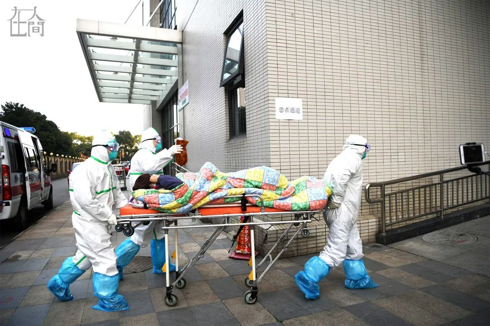
■ 1月29日，一名重症患者被医护人员用担架推进病房。
在北京医疗队负责的三个病区里，北京医疗队员和当地协和医院的医护人员合作值守，北京来的医护人员都是感染科、呼吸科、急诊科等与肺炎有关的专业科室，而协和的医护人员大多是其他普通病房的。病区内，诊治的医生每个班次由一位北京的大夫带一名本院大夫值班，护士则由两地人员混合排班。

■ 1月28日，协和医院的护士们围在电脑旁学习个人防护装备的穿戴。
对于当地医院来自非呼吸、非感染的普通科室医护人员来说，这种疾病的治疗和护理都是陌生的，科学严谨的防控是将病毒隔离开的最重要的东西，很多护士也几乎是从零学习严格的防护措施。
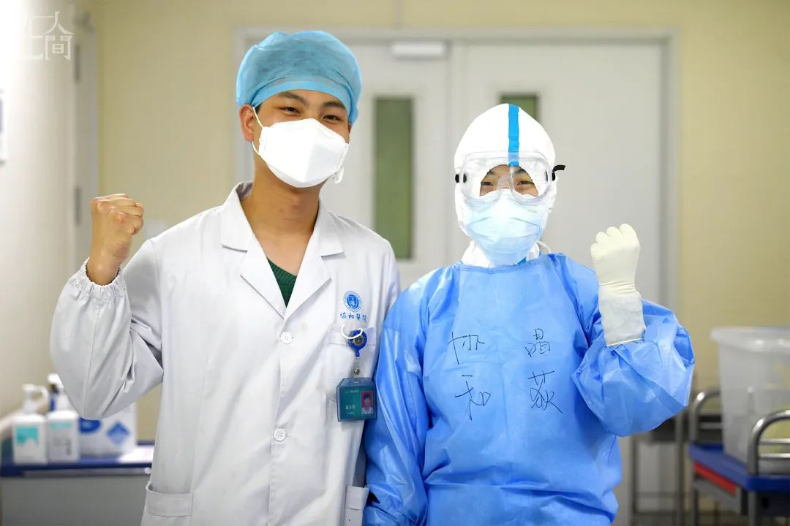
■ 武汉协和医院西院护士梁小华、彭晶荻夫妻在同一新冠肺炎病区并肩战斗。
面对这样未知的危险，在武汉协和医院西院的医护人员都没有退缩，即便是同一医院的双职工，也双双走上一线。
武汉协和医院的护士梁小华和彭晶荻，是在同一新冠肺炎病区并肩战斗的夫妻俩，他们都是90后，有一个7个月大的孩子。因为新冠肺炎疫情突袭，他们选择暂时离开家庭，将孩子交给爷爷奶奶照料，自己每日住宿舍，到病区上班。
对他们而言，武汉是自己的家，武汉人都是自己的“家人”。

■ 2月11日，高秀琴接受记者采访。
30岁的武汉协和医院西院护士高秀琴，肺部曾有旧疾，但她还是自告奋勇上了一线。刚到隔离病房时，高秀琴心中忐忑不安，北京医疗队的战友教她做好每一步的防护，让她慢慢放松下来。
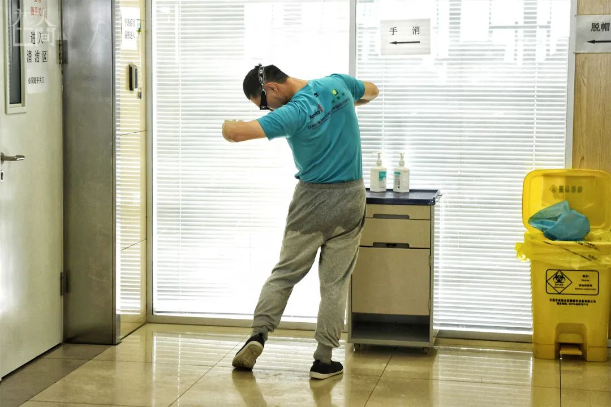
■ 1月30日，走出病房、脱下防护服的医生发现自己衣裤已经湿透。
隔离病房内条件艰苦，两层防护服隔离服、三层口罩手套鞋套，密不透气的防护让每个人都呼吸困难，视线受阻，汗流浃背。

■ 1月31日，一名护士被口罩勒伤了脸部皮肤，用医用胶布贴住。
长时间戴着口罩护目镜等防护用具，每个走出病房的医护人员脸上几乎都留下了深深的勒痕。
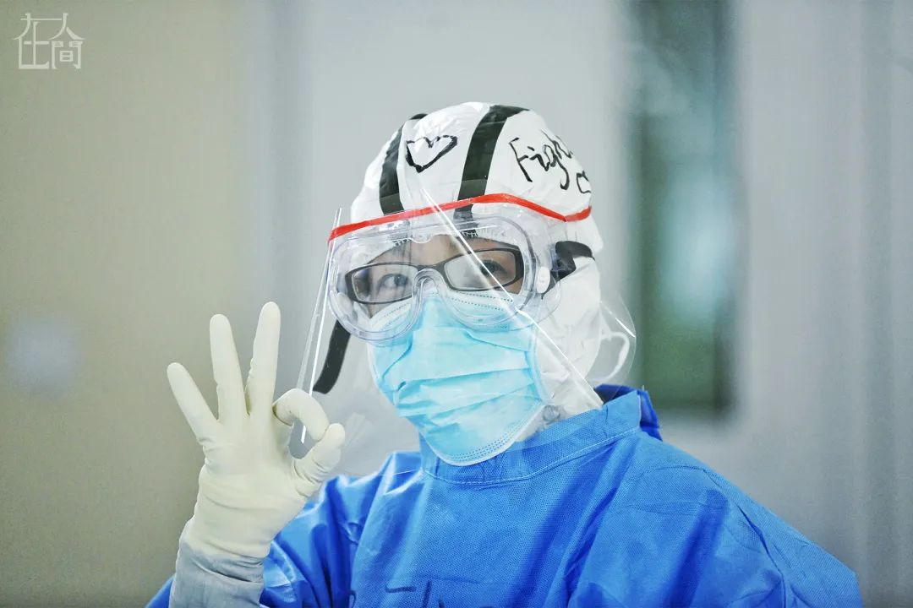
■ 2月8日，北京宣武医院的护士阮征，进入病房前在防护服的头顶画了一颗爱心，并写上了“Fighting”的标语。
面对危险，几乎每个人都是带着微笑进入隔离病房，他们彼此之间为战友鼓劲打气，也用各种方式为患者打气加油，在防护服上画上各种温暖的符号，写上不同的鼓励彼此的话语。
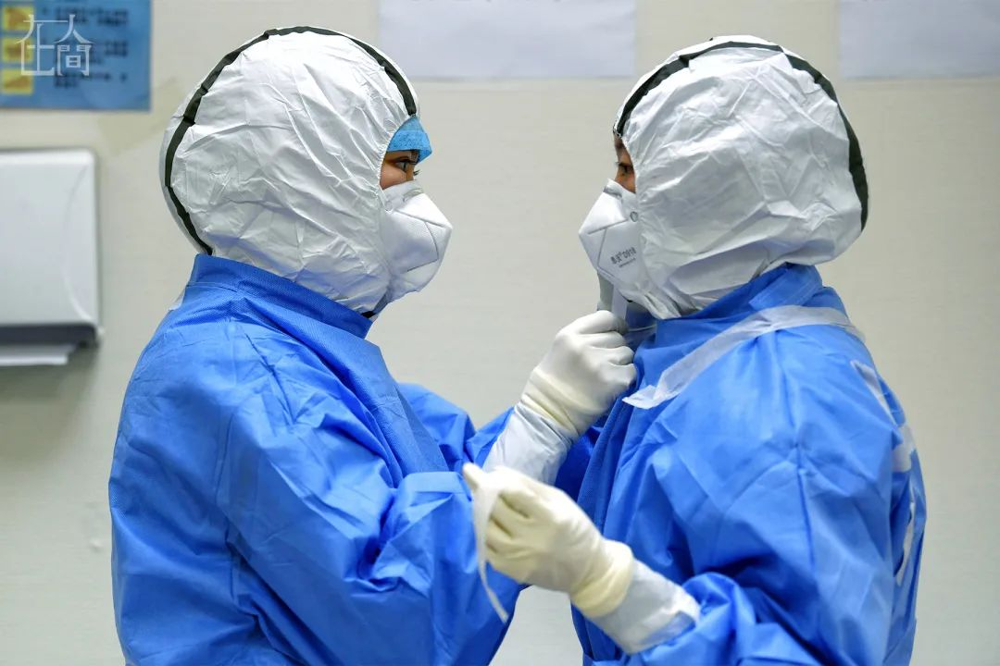
■ 2月8日，两名护士相互帮助穿防护服。
医护人员之间的感情，也在一次次与病毒近距离接触，一次次进出隔离病房之后越来越深。

■ 2月15日，一名清洁工人在雪中下班，穿着大号的垃圾袋作雨衣。
一座医院的运行并非完全靠着医护人员就足够的，很多类似清洁工这样基础性的保障岗位真的不可或缺。
隔离病房内的清洁工每日清运医疗垃圾，清扫地面……保障着病区内的环境卫生，做着最基础的工作。清洁工并非专业的医务人员，他们继续坚持在岗位上，与医护人员一起穿防护服进隔离病房，也是鼓起了很大的勇气。事实上，在病区运行之初，曾出现过一些清洁人员不愿进隔离病房的情况。但随着对防护知识的了解，见进出病房的人员也没有意外发生，这些后勤人员的情绪也稳定了下来。

■ 2月15日，大雪之中，戴红袖箍的保安询问两位进出医院的医护人员。
武汉协和医院西院的几个大门，都有安保人员24小时值守，由于防护服持续紧缺，安保人员们一般都不穿，只戴一只口罩，风风雨雨地就在露天环境下工作。每天数不清的医护人员、市民甚至患者从身边经过，他们也算得上是医院里最容易被感染的人，但他们仍旧坚持工作。
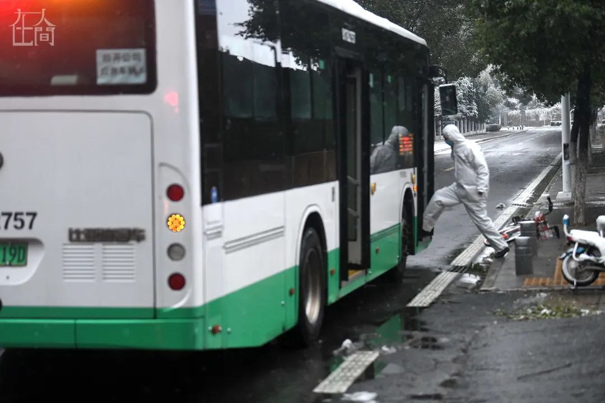
■ 全身防护的摆渡车司机袁建河。
另一个不可或缺的岗位是摆渡车司机。医疗队的住地和医院之间有大约3公里的距离，当地有关部门征用市政公交579次往返接送医护人员上下班。当地公交集团的袁建河就是其中一个司机，日常工作中他们也是全身防护。因为密切接触医护人员，所以从来不敢回家，连续一个月活动空间几乎只有宿舍和公交车上。

■ 2月15日的武汉风雪交加，北京医疗队员们顶风冒雪到医院上班。
冬春之交的武汉，气温起伏不定，暖起来可以只穿短袖T恤，冷起来却羽绒服都嫌不够保暖。医护人员们也在这里经历了不少极端天气。
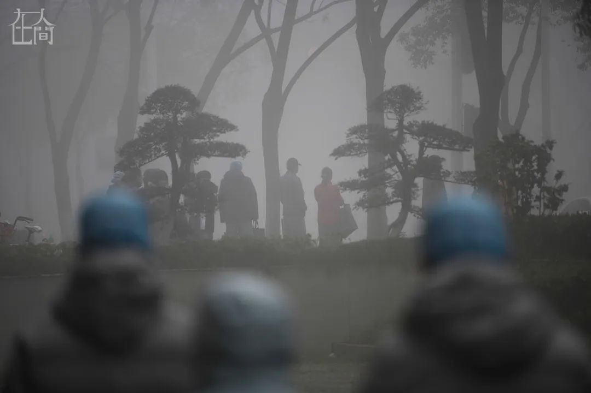
■ 2月22日的大雾，能见度最小时只有几十米。
新冠病区就会如同一台治病救人的机器，只有病床上还有病人，运行就不会中止。

■ 2月17日，医院里擦肩而过的两个路人，不约而同回头相望。
封城一个多月来，武汉市的定点收治医院成为了很多人生活的中心，不单单是医务人员，即便是普通市民，有时候在医院里匆匆而行擦肩而过的，说不定就是熟悉的朋友。

■ 2月17日，同时患病住院的一对年迈夫妻，相互搀扶着去相关科室做CT检查。
住进隔离病房意味着与亲人的分别，甚至可能是生离死别。武汉协和医院西院医里也有一家人同时住进医院，在这样的病痛之中有亲人相伴，是不幸也是幸运。
北京医疗队负责的病区就有这样一对老年夫妇，都是八十多岁年纪。他们并不是同时转进院的，一开始没有住在同一病房，医护人员了解到情况后，每次安排病人外出隔离病房做检查时（CT检查在另一栋楼），都让两人同进同出。他们坚持不让医护人员帮助，而是选择自己往返。一位腿脚不便的老爷子拄着拐杖蹒跚而行，奶奶小心翼翼地搀扶着丈夫。这画面令人不胜唏嘘。
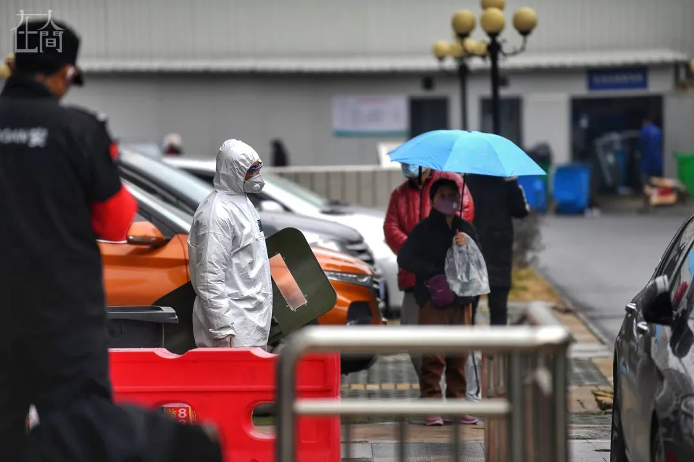
■ 2月17日，安保人员带盾牌守住病区门口，阻拦想要进入病房的家属。
随着住院患者增多，守在病房外不愿离开的患者家属也越来越多。此处穿着防护服的保安不得不拿起盾牌和钢叉，防止有人擅自进入。对此很多家属并不理解，他们宁愿冒着生命危险，也要争取与亲人见面的机会。
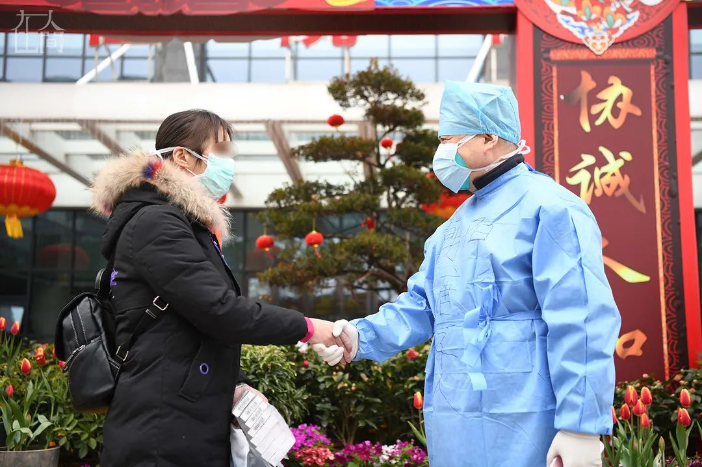
■ 2月7日，北京医疗队医生与出院患者握手祝贺她康复。
夏女士入院时的症状为咳嗽、发热，同时具有CT肺炎影像学特征，但入院后的两次核酸检测均为阴性。根据第五版《新型冠状病毒感染的肺炎诊疗方案》，此类湖北省内疑似病例具有肺炎影像学特征者，属临床诊断病例。
2月7日，北京医疗队病区内经过多日的治疗护理，终于治愈出院，她也成为北京医疗队病区内第一位出院的患者。病区的医护人员非常激动，告诉夏女士“出去后一定要保重身体，你是我们这里第一个出院的，是我们的希望！”

■ 2月13日，康复出院的患者沈女士激动地手舞足蹈起来。
随后，好消息不断传来，病区几乎每天都有患者康复出院。57岁的沈女士，1月下旬出现症状，随后被送到这里。在医院治疗时，情绪乐观的她积极配合治疗，病情很快就由重症转轻。2月13号出院那天，她走出病房时忍不住手舞足蹈起来。从医院回到社区自行隔离后，沈女士还通过微信群与病房内的病友联系，鼓励他们积极配合治疗。
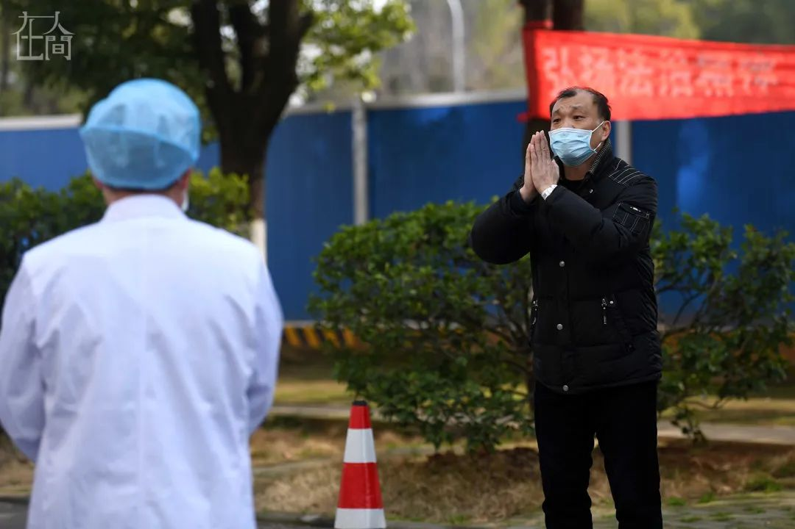
■ 2月13日，患者看见医生路过，远远地双手合十致谢。
2月13日那天，出病房进行身体检查的患者陈先生在回病房的路上偶遇医生，他停下脚步，远远地从路对面双手合十表示感谢。
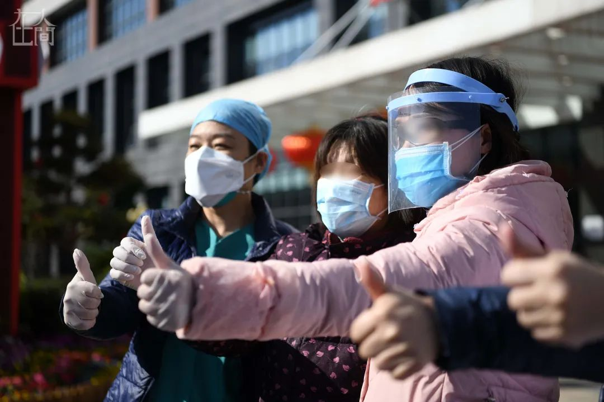
■ 出院患者和医护人员合影。
截至2月25日上午9时，北京医疗队三个病区累计收治患者257例，多为重症危重症患者。累计出院43例，转往其他病区25例，转往其他医院19例。目前在院患者136例，其中确诊病例110例，疑似病例26例，重症病例112例，危重病例19例。
医院如同一个生死场，疫情之下，普普通通的人来来往往，离合悲欢不停上演。他们大都寂寂无名，去留无声，但各自为了活着，更好地活着，坚持着，努力着……
疫情还没有结束，故事还没有讲完，让他们和我都继续。


新型肺炎疫情牵动人心，
《在人间》现面向全国网友征稿：
（一） 疫区影像日记
如果你身处疫区
请你用照片（视频）和文字记录
你所听闻和见到的一切
照片不少于3张
文字不少于300字
投稿方式：微信联系人间君（zairenjianliving）
（二）抗击疫情真实故事
无论你是一线医护人员、志愿者、
确诊或疑似患者及家属、已治愈出院人士等等，
如果希望讲述疫情相关经历，
请微信联系人间君（zairenjianliving）

文章已于修改
原文链接 备份链接 *************▲*************2月8日晚，武汉雷神山医院收治第一批转运来的新冠肺炎患者。（新华社/图 ） 全文共*2708*字，阅读大约需要7分钟。 所有设备调试完毕后，雷神山医院感染一科十 …
原文链接 备份链接 澎湃新闻记者 李佳蔚 郁斐 制图 进驻武汉第一天，上海医疗队就知道，要治愈的不仅是患者身体，治愈出院也不会是服务终点。 时至今日，事实证明他们做得不赖。 2月7日，上海中山医院第四批医疗队进驻武汉大学人民医院东院，整建 …
原文链接 备份链接 江汉方舱医院护士正在收集患者信息。 图：受访者提供 记者：陈鑫 “ 有人已经出院，有人继续等待，他们正在与新型冠状病毒做最后的博弈。 ” 2月12日晚，45岁的老邓做完第二次核酸复查回到病房。即使戴着口罩也能看出他难掩 …
原文链接 备份链接 张定宇常说，自己“太急了”。他的急迫感，来自于自己逐渐萎缩的运动神经元细胞，也来自于肆虐武汉城的新型冠状病毒，他想从死神手中抢夺回更多的生命。 张定宇很急。国家电视台拍摄他那天，他从门诊大厅、病房、值班室、会议 …
原文链接 备份链接 *************▲*************2月4日，医护人员将患者转运至武汉火神山医院病房。 （新华社记者 肖艺九/图） 全文共7126字，阅读大约需要14分钟。 火神山医院从开工到交付使用，只用了大 …